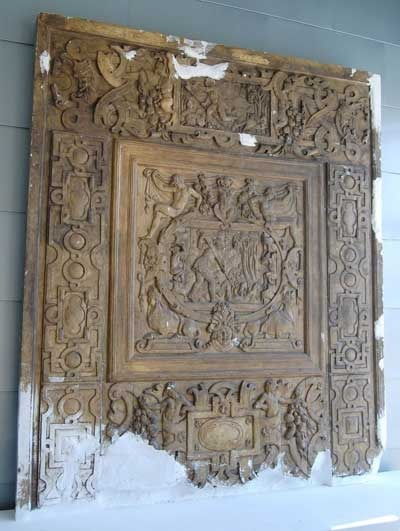
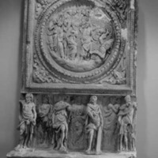
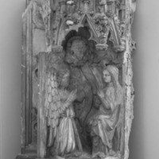
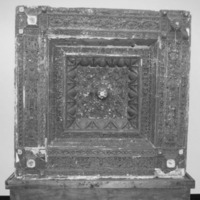

Advanced Search (Items only)

Cast no.43a
The last five casts (cast nos.42, 43a, 43b, 44 and 57) were acquired by two George Mason University undergraduates: Lucy Miller and Anna Zacherl.
Click here to view the entire story.
Cast no.42

Cast no. 43b

Cast no. 44

Cast no. 57